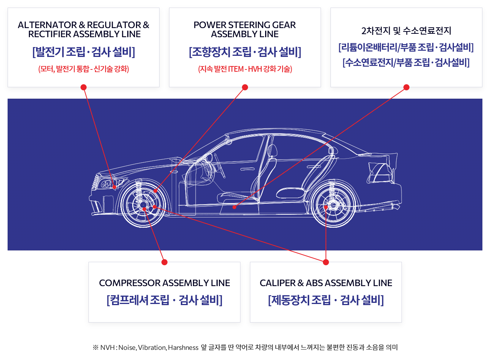
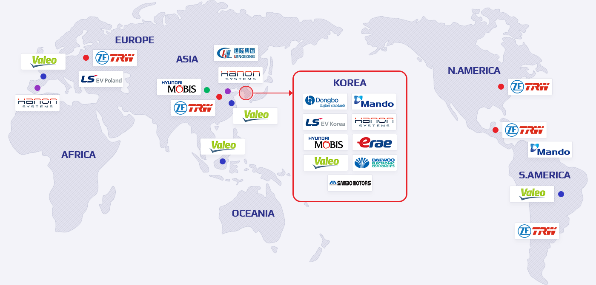
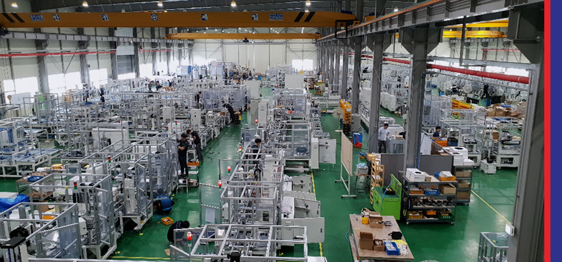
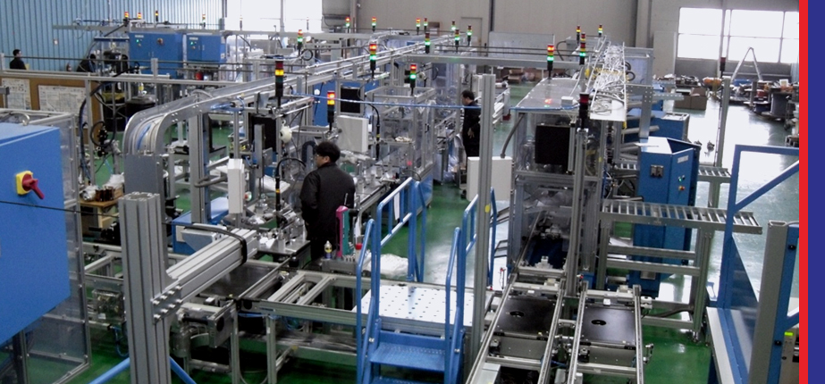
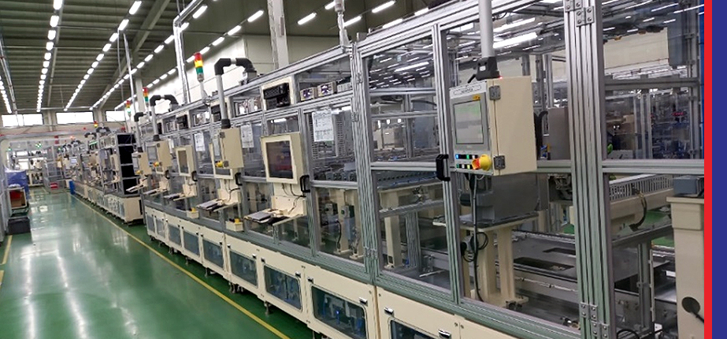
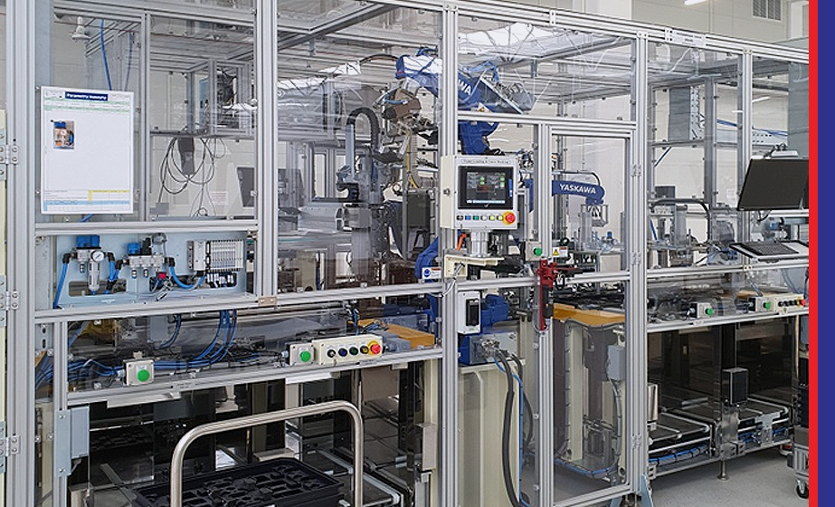

자동차 부품 제조용 자동화 설비 개발 및 제조
원본 사이트의 설비 포트폴리오 이미지를 배치해 조립기와 검사설비를 아우르는 제작 역량이 바로 보이도록 구성했습니다.

국내외 주요 거래처

국내
현대모비스, 발레오전장, 이래오토모티브, 한온시스템, 대우전자부품, LSEV코리아, 동보, Korea 삼보모터스
해외
ZF TRW(미국,슬로바키아,폴란드,중국,멕시코,브라질), 현대모비스(중국), 상해발레오(중국,인도네시아), 한온시스템(포루투칼,중국), 삼환(중국), 황융(중국), 남경동화기차(중국)
주력 제품 현황 및 개요

전동컴프레서 설비 핵심기술
전동컴프레서 조립라인 (조립기+검사설비)

파워스티어링 조립라인
전동식 파워스티어링 (EPS) 조립설비라인

2차전지 부문 - ICB
ICB 조립라인 (조립기+검사설비)

2차전지 부문 - BFA
BFA 조립라인 (조립기+검사설비)